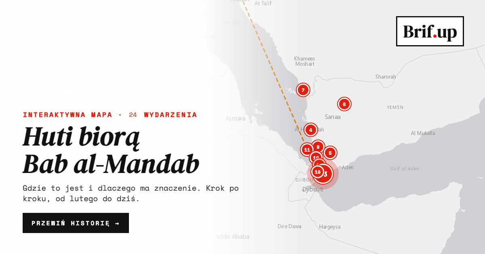

Interaktywna mapa
Zgubiłeś się w wiadomościach z Morza Czerwonego?
Ułożyliśmy je na mapie. Przewijasz w dół, a kolejne wydarzenia zapalają się w miejscach, gdzie się rozegrały, z krótkim wyjaśnieniem, dlaczego akurat to miejsce ma znaczenie dla cen paliw i handlu.

- 17 wydarzeń w kolejności, od lutego do dziś. Każde z datą i miejscem na mapie.
- „Dlaczego to miejsce”: krótka ramka przy każdym punkcie. Wyspa o powierzchni 13 km², port od kawy, rura o długości 1200 km.
- Dwie minuty i wiesz, o co chodzi w nagłówkach o ropie i frachcie.
Otwórz mapęPrzewiń historię →
Więcej: bieżące wydanie Brif.up